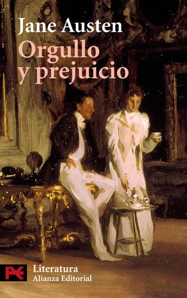

Son títulos espléndidos de los que puedes disfrutar en las largas tardes de verano, entre trenes y aviones, disfrutando de un buen insomnio ... Nuestro mix de novelas actuales y clásicos atemporales.
2017 - Ed. Seix Barral
La obra de Auster da para todas las estaciones: elegiría La trilogía de Nueva York para la primavera, Sunset Park para el verano, Brooklyn Follies para el otoño... Resérvate cualquier momento para 4 3 2 1, un clásico instantáneo. Su tratado definitivo sobre la juventud, el amor y el arte.
2004 - Alianza Editorial
Si piensas que es una novela para mujeres, pues es verdad, es maravillosa para mujeres. Exactamente igual de maravillosa que para hombres. Uno de los retratos más vigorosos sobre el deseo, el amor y su encaje social en el siglo XIX.
2012 - Random House
Una obra fundamental y cáustica. Puedes encontrar el contenido completo de las reseñas y descripciones originales en la estructura del código proporcionado.